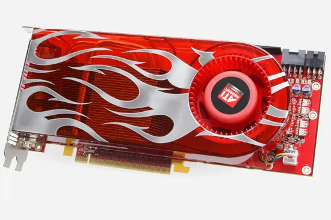

DESCRIPCION
La serie Radeon HD 2000 de AMD, lanzada en 2007, marcó un hito en la evolución de las tarjetas gráficas. Basada en la arquitectura TeraScale, estas tarjetas ofrecían un rendimiento sólido para juegos y aplicaciones multimedia de la época. Con soporte para DirectX 10 y OpenGL 2.0, la serie HD 2000 proporcionaba una experiencia visual mejorada y capacidades de procesamiento gráfico avanzadas. Aunque hoy en día se consideran obsoletas frente a las tarjetas modernas, las Radeon HD 2000 siguen siendo un ejemplo importante del progreso tecnológico en el ámbito de los gráficos por computadora.

ESPECIFICACIONES
precio: 70$
NOTA: La serie Radeon HD 2000 es una línea de tarjetas gráficas antiguas y puede no ser compatible con los juegos y aplicaciones más recientes. Se recomienda considerar opciones más modernas para un rendimiento óptimo en tareas gráficas actuales.
Realizar pedido